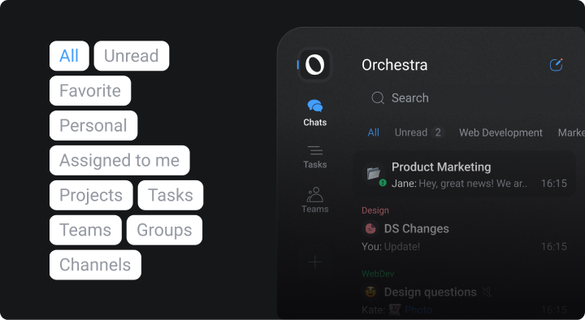

8 Tools That Outperform Trello in Project Management Features
Apps that are finely designed and combine the needed features for smooth collaboration are out there. And we're not talking about Trello.

Trello is praised for being a simple-to-use app that teams love. There's an obsession with using boards, lists, and cards to stay organized. But as teams grow and workflows become more complex, you might find yourself looking for something equally complex. Whether you're just exploring options or looking for specific products with new features, more customization, or better integration options, we've got you covered.
This article presents the 8 best Trello alternatives you might find interesting. Think globally and make a wise choice to boost your team’s productivity and streamline your projects.
Asana
An ideal for teams needing more functionality than Trello. With features like Kanban boards, timelines, and calendars, it supports diverse workflows. Its flexible structure makes it suitable for managing both simple tasks and complex projects, making it a great choice for fast-growing teams.
Known for
- Task dependencies to manage project flow.
- Multiple project views (lists, kanbans, timelines, calendars, and Gantt charts).
- Pre-built templates for simple projects that don't need customization.
- Automations and 200+ integrations witch such apps like Slack, Google Workspace, and Microsoft Teams.
ClickUp
The app takes an 'all-in-one' approach, offering a range of features to manage tasks, docs, goals, and chats. Like Trello on steroids.
Known for
- Highly customizable dashboards with custom fields, templates, and views.
- Time tracking for tasks of any size and matter.
- Automation for repetitive workflows and 100+ prebuilt templates.
- 50+ native tools – like Google Workspace and Slack – and over 1,000 apps via Zapier.
Monday.com
Another popular Trello alternative with a focus on visual project management. Its colorful interface makes it easy to see what’s happening at a glance.
Known for
- Customizable dashboards with widgets like charts, timelines, and more.
- Automation triggers notifications, task updates, or process steps to build strong workflows.
- Multiple views, such as Kanban boards, Gantt charts, and calendars.
- Features for team communication.
Notion
The app combines project management with documentation, making it perfect for teams that need a more holistic workspace. It's a great fit if you want to combine knowledge sharing with task management.
Know for
- Custom databases and templates.
- AI text editor for any kind of documents.
- Pages and tables with multiple views (boards, lists, calendars).
- Lots of integrations – Slack, Zapier, Figma, etc.
Wrike
It's powerful reporting tools make it perfect for data-driven teams that need detailed insights into project progress. Marketing, creative, and IT/digital teams that juggle multiple projects at once can only benefit from such an option.
Known for
- Customizable workflows and request forms with embedded AI.
- Kanbans, gantt charts and calendar views.
- Real-time reports and analytics.
- Integrates with tools like Salesforce, Slack, and Google Workspace.
Airtable
A cross between a spreadsheet and a project management tool. If your team works with data and needs flexibility – try it out.
Known for
- Customizable fields and a relational database.
- Powerful filtering and sorting.
- Collaborative features to work with data together in sync.
- Multiple integrations, including syncing with platforms like Asana and Jira.
Orchestra
An all-in-one workspace for collaboration you've never known was possible.

Known for
- Chat-centric interface with plain chats space, no intrusive threads.
- Discussions turn into actionable tasks or CRM entries with multiple views.
- Media hub for all your files, links, and images in one organized place.
- AI employee in every chat and task to summarize routine things.
Basecamp
It is also a collaboration and productivity tool, often used by medium-sized teams. Simple to use, it offers a streamlined approach to management and communication.
Known for
- Message boards and to-do lists for tracking project progress.
- Real-time group chat (campfire).
- Document and file storage within projects.
- Automatic check-ins to stay updated.
What works best for you in the end?
There's no one-size-fits-all when it comes to management tools and making your team productive, but hopefully, this list provides you with a good starting point:
| Asana | ClickUp | Monday | Notion | Wrike | Airtable | Orchestra | Basecamp | |
| Who benefits from it | Teams that grow steadily and surely | Tech, creative teams, or agencies | Teams that require custom automation | Teams seeking a workspace for more individual work | Enterprise teams working with data | Teams needing content planning and data tracking | Teams looking to save data work and communication together | Teams that embrace simplicity in management |
| Pricing | $25 per person for advanced use | $12 and more per person for advanced use | $19 and more per person for advanced use | $14 and more per person for advanced use | $25 and more per person for advanced use | $45 and more per person for advanced use | $10 and more per person for advanced use | $349 for unlimited users |
FAQ
What is the best free alternative to Trello?
Orchestra, ClickUp or Notion both offer free plans with features for collaboration and management needs.
Which tool is better for large teams?
Asana or Wrike are great options for larger teams. Specially, in terms of advanced reporting and security features.
Can I migrate my Trello boards to other tools?
Sure thing. Most of Trello alternatives offer migration tools to import your boards and tasks seamlessly.